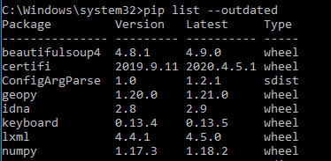
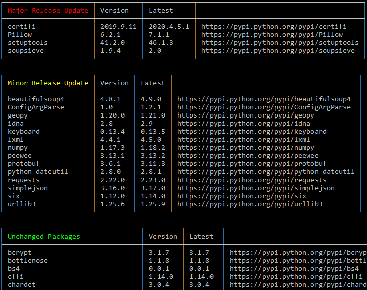

Начиная с версии 1.3, в pip появилась новая команда:
$ pip list --outdated
requests (Current: 1.1.0 Latest: 1.2.0)
Смотрите этот пост для получения дополнительной информации.
Дело в том, что я никогда не обновляю все пакеты. Я обновляю только то, что мне нужно, потому что проекты могут ломаться.
Поскольку не было простого способа обновлять пакет за пакетом и обновлять файл requirements.txt Я написал pip-upgrader, который также обновляет версии в вашем requirements.txt файле для выбранных пакетов (или всех пакетов).
Установка
pip install pip-upgrader
Использование
Активируйте свой virtualenv (важно, потому что при этом также будут установлены новые версии обновленных пакетов в текущем virtualenv).
cd перейдите в каталог вашего проекта, затем запустите:
pip-upgrade
Расширенное использование
Если требования размещены в нестандартном расположении, отправьте их в качестве аргументов:
pip-upgrade path/to/requirements.txt
Если вы уже знаете, какой пакет хотите обновить, просто отправьте их в качестве аргументов:
pip-upgrade -p django -p celery -p dateutil
Если вам нужно обновиться до предварительной / пострелизной версии, добавьте --prerelease аргумент в свою команду.
Полное раскрытие: я написал этот пакет.
Простой вывод:
pip list --outdated

Смотрите также документы о pip list --outdated опции.
Красивый результат:
pip install pip-check
pip-check
